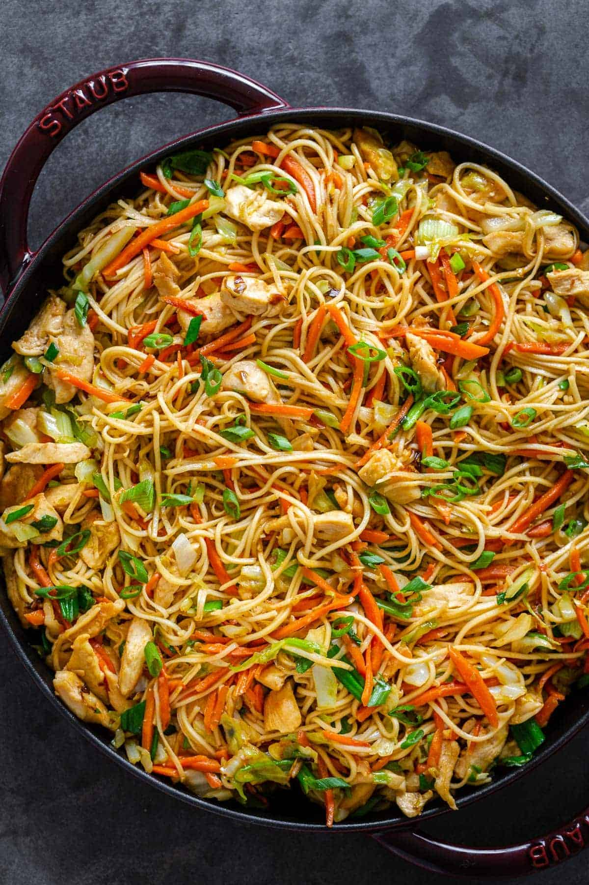

Chicken Chow Mein Recipe - Odin Recipe
Recipe of Chicken Chow Mein - The best Chinese Dish

Chow mein is a traditional Chinese dish made with egg noodles and stir-fried veggies
Ingredients
- Chow Mein Noodles
- Vegetables
- Meats
- Hot Tip
Steps
- In a small mixing bowl, combine ingredients for chow mein sauce: oyster sauce, sesame oil, soy sauce, chicken broth, and cornstarch. Set aside.
- Cook noodles according to package instructions, set aside.
- Heat a large wok or pan. Add a bit of oil to the pan and cook chicken until it’s golden brown. Remove chicken and set aside.
- Add carrots, cabbage and pressed garlic and saute for a few minutes until veggies are slightly softened.
- Add chicken back to the pan, followed by cooked noodles and pour the sauce right on top. Cook for about 2 minutes, distributing all that saucy goodness around evenly.
- Add chopped green onions and remove from the heat. Serve hot!